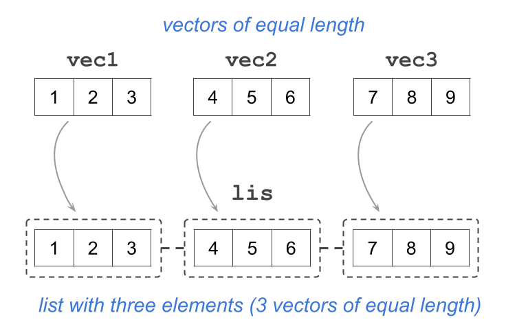
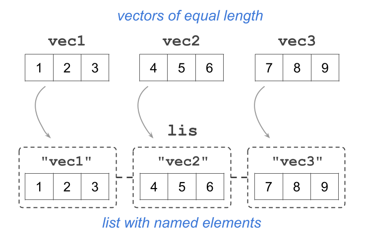
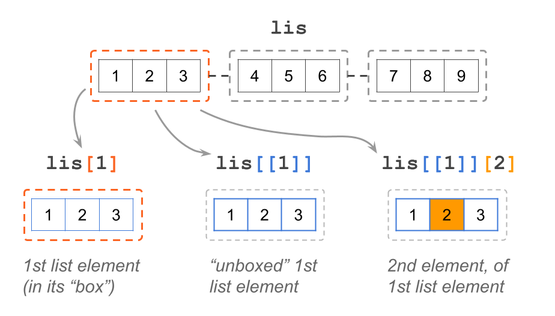
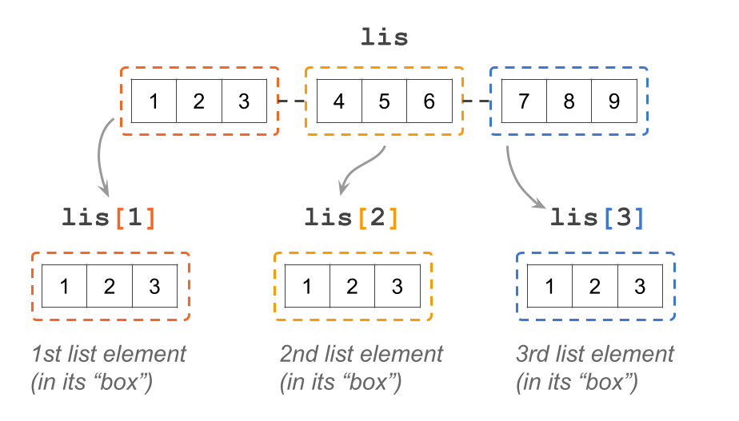
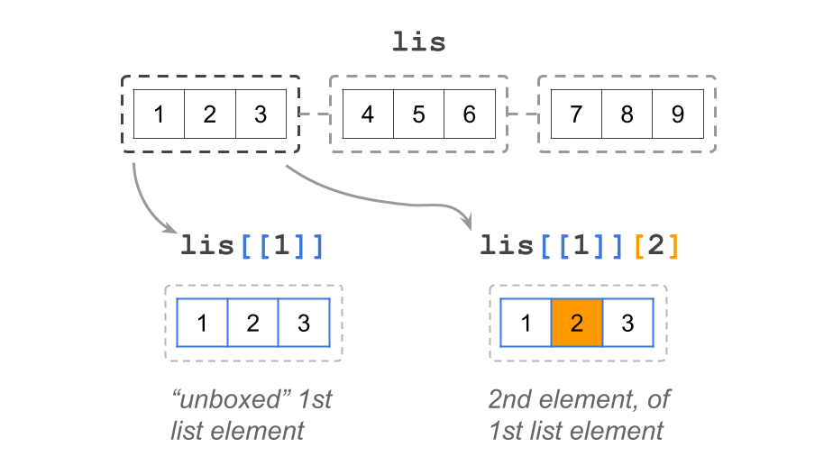
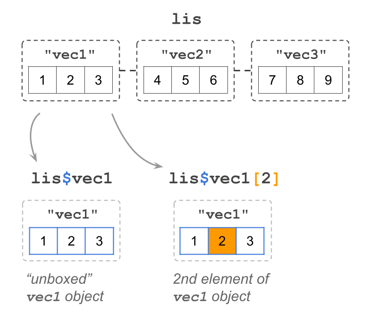

investment1_specs = c(
"deposit" = 1000, # double
"rate" = 0.02, # double
"years" = 4L, # integer
"account" = "savings" # character
)8 Lists
In this chapter, you will learn about R lists, the most generic type of data container in R. Here’s a summary of the main features of R lists:
- Lists are the most general class of data container
- Like vectors, lists group data into a one-dimensional set
- Unlike vectors, lists can store all kinds of objects
- Lists can be of any length
- Elements of a list can be named, or not
8.1 Motivation
In the chapter about Matrices and Arrays we considered a small portfolio consisting of the following three investments:
$1000 in a savings account that pays 2% annual return, during 4 years
$2000 in a money market account that pays 2.5% annual return, during 2 years
$5000 in a certificate of deposit that pays 3% annual return, during 3 years
Let’s pay attention to the first investment: the savings account. Suppose I’m interested in creating an object to store the specifications of this investment, that is, I would like to have an R object with four elements
- the initial deposit:
1000 - the annual rate of return:
0.02 - the number of years:
4L - and the type of account:
"savings"
What kind of object could I use? With all the things we’ve discussed so far, a natural decision would be to store these values in a vector:
Notice that I’m creating investment1_specs by mixing elements of different data types: a couple of double types, an integer type, and a character type. Thus, a very pertinent question is: What kind of vector is investment1_specs? If your answer to the preceding question was character, then congrats! By now, I expect that you can correctly answer this question without any trouble. If that is not the case then go back to chapter Creating Vectors and reread the section on Coercion.
One simple way to confirm that investment1_specs is indeed of "character" type is by simply inspecting its contents:
investment1_specs deposit rate years account
"1000" "0.02" "4" "savings" While the investment1_specs object “technically” is storing the specifications of the savings account, all the initial numeric values have been coerced into characters, which may not be the best way to store this information. The solution to this limitation that vectors and other atomic objects have is to employ another kind of object in R: lists.
8.2 Lists
An R list is the most generic kind of data object in R in the sense that you can combine elements of different data types without them being coerced.
The primary function to create lists is the homonym function list(). To give you an example of a basic list let us again pay attention to the specifications of the first investment
- the initial deposit:
1000 - the annual rate of return:
0.02 - the number of years:
4L - and the type of account:
"savings"
Instead of using a vector, we can create a list to store these values. All we have to do is use list() instead of c():
specs1 = list(
"deposit" = 1000, # double
"rate" = 0.02, # double
"years" = 4L, # integer
"account" = "savings" # character
)
specs1$deposit
[1] 1000
$rate
[1] 0.02
$years
[1] 4
$account
[1] "savings"Observe the way R prints a list with named elements. In contrast to the way elements of a vector are displayed—in a contiguous form—the elements of a list are displayed in a noncontiguous manner. Also, note how the names of the elements are listed with a preappended dollar sign. For example, the first element is $deposit, the second element is $rate, and so on.
What about the data type for each element of the list? From the visual inspection of the elements in specs1, you can tell that all the numeric values are not being coerced into strings. Which is what we were looking for. We were interested in obtaining an object in which each of its elements gets to keep its data type.
If you try to use typeof() on a list in an attempt to get the data types of its elements, I’m afraid this won’t work the way you expect it:
typeof(specs1)[1] "list"Applying typeof() on a list results in a not very interesting output "list".
Getting ahead of myself momentarily, let me show you how to use the dollar operator $ to refer to an named element of a list and check its data type:
typeof(specs1$deposit)[1] "double"typeof(specs1$account)[1] "character"We’ll discuss the different ways in which you can subset elements of a list later in this chapter.
8.3 Creating Lists
The typical way to create a list is with the function list(). This function creates a list the same way c() creates a vector. Let’s start with a simple example creating three numeric vectors of same length, that we then use to store them in a list:
vec1 <- 1:3
vec2 <- 4:6
vec3 <- 7:9
# list with unnamed elements
lis <- list(vec1, vec2, vec3)
lis[[1]]
[1] 1 2 3
[[2]]
[1] 4 5 6
[[3]]
[1] 7 8 9Note how the contents of a list with unnamed elements are displayed: there is a set of double brackets with an index indicating the position of each element, and below each double bracket the corresponding vector is printed.
For illustration purposes, we could visualize the three input vectors and the list with the following conceptual diagram.

Our intention with the depicted list as a set of discontinuous cells is to convey the idea that a list is also a one-dimensional vector, albeit a very special type of vector: a non-atomic vector. This means that each element of a list can be any kind of object.
In the same way you can give names to elements of a vector, you can also give names to elements of a list:
# list with named elements
lis <- list("vec1" = vec1, "vec2" = vec2, "vec3" = vec3)
lis$vec1
[1] 1 2 3
$vec2
[1] 4 5 6
$vec3
[1] 7 8 9When you create a list in this form, you can actually omit the quotes of the given names. While this option of naming elements may create a bit of confusion for beginners and inexperienced users in R, we believe it’s not a big deal (based on our experience):
# another option for giving names to elements in a list
lis <- list(vec1 = vec1, vec2 = vec2, vec3 = vec3)
lis$vec1
[1] 1 2 3
$vec2
[1] 4 5 6
$vec3
[1] 7 8 9Observe how the contents of a list with named elements are displayed: this time, instead of the set of double brackets, there is a dollar sign followed by the name of the element, e.g. $vec1. Below each name, the corresponding vector is printed.
The conceptual diagram in this case could look like this:

As we just said, the elements of a list can be any kind of R object. For example, here’s a list called lst that contains a character vector, a numeric matrix, a factor, and another list:
lst <- list(
c("savings", "money_mkt", "certificate"),
matrix(1:6, nrow = 2, ncol = 3),
factor(c("yes", "no", "no", "no", "yes")),
list(1000, 2000, 5000)
)
lst[[1]]
[1] "savings" "money_mkt" "certificate"
[[2]]
[,1] [,2] [,3]
[1,] 1 3 5
[2,] 2 4 6
[[3]]
[1] yes no no no yes
Levels: no yes
[[4]]
[[4]][[1]]
[1] 1000
[[4]][[2]]
[1] 2000
[[4]][[3]]
[1] 5000Whenever possible, I strongly recommend giving names to the elements of a list. Not only this makes it easy to identify one element from the others, but it also gives you more flexibility to rearrange the contents of the list without having to worry about the exact order or position they occupy.
# whenever possible, give names to elements in a list
lst <- list(
first = c("savings", "money_mkt", "certificate"),
second = matrix(1:6, nrow = 2, ncol = 3),
third = factor(c("yes", "no", "no", "no", "yes")),
fourth = list(1000, 2000, 5000)
)8.4 Manipulating Lists
To manipulate the elements of a list you can use bracket notation. Because a list is a vector, you can use single brackets (e.g. lis[1]) as well as double brackets (e.g. lis[[1]]).

8.4.1 Single brackets
Just like any other vector, and any other data object in R, you can use single brackets on a list. For example, consider the unnamed version of a list, and the use of single brackets with index 1 inside them:
# list with unnamed elements
lis <- list(vec1, vec2, vec3)
lis[1][[1]]
[1] 1 2 3What a single bracket does, is give you access to the “container” of the specified element but without “unboxing” its contents. This is reflected by the way in which the output is displayed: note the double bracket [[1]] in the first line, and then [1] 1 2 3 in the second line.
In other words, lis[1] gives you the first element of the list, which contains a vector, but it does not give you direct access to the vector itself. Put another way, lis[1] lets you see that the first element of the list is a vector, but this vector is still inside its “box”.

8.4.2 Double Brackets
In addition to single brackets, lists also accept double brackets: e.g. lis[[1]]
lis[[1]][1] 1 2 3Double brackets are used when you want to get access to the content of the list’s elements. Notice the output of the previous command: now there are no double brackets, just the output of the vector in the first position. Think of this command as “unboxing” the object of the first element in lis.
What if you want to manipulate the elements of vector vec1 or vec2? Use double brackets followed by single brackets
# second index of first list's element
lis[[1]][2][1] 2# first index of second list's element
lis[[2]][1][1] 4
8.4.3 Dollar signs
R lists—and data frames—follow an optional second system of notation for extracting named elements using the dollar sign $

Let’s use the named version of lis:
# list with named elements
lis <- list("vec1" = vec1, "vec2" = vec2, "vec3" = vec3)
lis$vec1[1] 1 2 3The dollar sign $ notation works for selecting named elements in a list. Notice the output of the above command: lis$vec1 gives you vector 1 2 3. In other words, dollar notation “unboxes” the object that is associated to the specified name.
8.4.4 Adding new elements
From time to time, you will want to add one or more elements to an existing list. For instance, consider a list lst with two elements:
lst <- list(1:3, c('A', 'B', 'C'))
lst[[1]]
[1] 1 2 3
[[2]]
[1] "A" "B" "C"Say you want to add a logical vector as a third element to lst. One option to do this is with double brackets, specifying a new index position to which you assign the new element:
lst[[3]] <- c(TRUE, FALSE, TRUE, FALSE)
lst[[1]]
[1] 1 2 3
[[2]]
[1] "A" "B" "C"
[[3]]
[1] TRUE FALSE TRUE FALSEAnother option is to use the dollar operator by giving a new name to which you assign the new element. Even though the previous elements in lstare unnamed, the new added element will have an associated label:
lst$new_elem <- 'nuevo'
lst[[1]]
[1] 1 2 3
[[2]]
[1] "A" "B" "C"
[[3]]
[1] TRUE FALSE TRUE FALSE
$new_elem
[1] "nuevo"8.4.5 Removing elements
Just like you will want to add new elements in a list, you will also find occasions in which you need to remove one or more elements. Take the previous list lst with four elements, and say you want to remove the third element (containing the logical vector)
lst[[1]]
[1] 1 2 3
[[2]]
[1] "A" "B" "C"
[[3]]
[1] TRUE FALSE TRUE FALSE
$new_elem
[1] "nuevo"To remove the third element, which is unnamed, you use double brackets and assign a value NULL to that position:
lst[[3]] <- NULL
lst[[1]]
[1] 1 2 3
[[2]]
[1] "A" "B" "C"
$new_elem
[1] "nuevo"As for those named elements, such as lst$new_elem, you do the same and assign a NULL value, but this time using dollar notation:
lst$new_elem <- NULL
lst[[1]]
[1] 1 2 3
[[2]]
[1] "A" "B" "C"8.5 Exercises
1) How would you create a list with your first name, middle name, and last name? For example, something like:
$first
[1] "Gaston"
$middle
NULL
$last
[1] "Sanchez"Show answer
lis = list(
first = "Gaston",
middle = NULL,
last = "Sanchez"
)2) Consider an R list student containing the following elements:
$name
[1] "Luke Skywalker"
$gpa
[1] 3.8
$major_minor
major minor
"jedi studies" "galactic policies"
$grades
course letter
1 light-sabers B
2 force-101 A
3 jedi-poetry C+- Which of the following commands gives you the values of column
letter(i.e. column of elementgrades)? Mark all valid options.student$grades[ ,letter]student$grades[ ,2]student[[4]][ ,2]student[4][ ,2]
Show answer
# a) values in column "letter" are given by:
# option ii)
# option iii)- Which of the following commands gives you the length of
major_minor? Mark all valid options.length(student[3])length(student$major_minor)length(student[c(FALSE, FALSE, TRUE, FALSE)])length(student[[3]])
Show answer
# b) length of "major_minor" is given by:
# option ii)
# option iv)- Which of the following commands gives you the number of rows in
grades? Mark all the valid options.nrow(student[["grades"]])nrow(student[4])nrow(student$grades)nrow(student[ ,c("course", "letter")])
Show answer
# c) values in column "score" are given by:
# option i)
# option iii)- Which of the following commands gives you the value in
name? Mark all the valid options.student(1)student$namestudent[[name]]student[[1]]
Show answer
# d) value in "name" is given by:
# option ii)
# option iv)3) I have created an R object called obj, which looks like this when printed on the console:
$exams
midterm final
100 90
Levels: 90 100
$grades
midterm final
"A+" "A-"
$hws
topic points
1 x 151
2 y 154
3 z 159Indicate whether each of the following statements is True or False.
- length of
obj$hwsis 3
Show answer
# a) length of obj$hws is 3
# False- data type of
obj$examscould be double (i.e. real)
Show answer
# b) data type of obj$exams could be double
# Falseobj$gradescannot be a factor
Show answer
# c) obj$grades cannot be a factor
# Trueobj$hwscould be a data frame
Show answer
# d) obj$hws could be a data frame
# Trueobj$hwscould be a matrix
Show answer
# e) obj$hws could be a data frame
# False- column
pointsinobj$hwscould be a factor
Show answer
# f) column "points" in obj$hws could be a factor
# True4) Consider an R list apprentice containing the following elements:
$name
[1] "Anakin Skywalker"
$gpa
[1] 4
$major_minor
major1 major2 minor
"jedi studies" "sith studies" "galactic policies"
$grades
course score
1 force-101 9.3
2 podracing 10.0
3 light-sabers 8.5Without running the commands in R, write down what will appear at the console when such commands are executed:
length(apprentice$major_minor)
apprentice$gpa < 2.5
names(apprentice$major_minor)
rep(apprentice$grades[[2]][2], apprentice$gpa)
apprentice$grades[order(apprentice$grades$score), ]